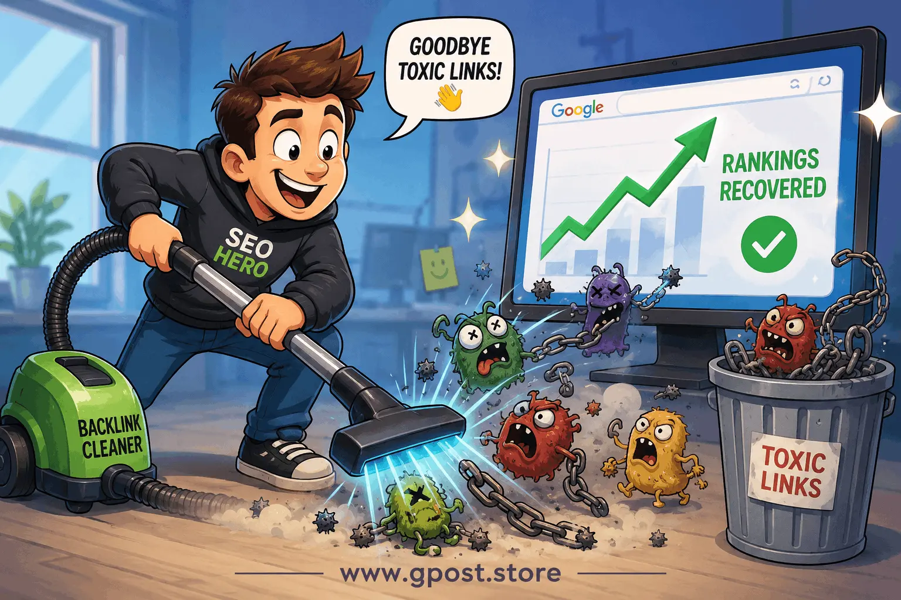

How to fix toxic backlinks from guest posting : Ultimate Expert Guide for 2026
How to fix toxic backlinks from guest posting has become one of the most important SEO recovery skills in 2026,
especially for websites that previously relied on large-scale outreach campaigns or low-quality guest post networks.
Many site owners in the USA are now facing sudden ranking drops, not because of content quality issues, but because
their backlink profiles contain unnatural, irrelevant, or spammy guest post links that trigger Google’s algorithmic filters.
The modern SEO landscape is heavily influenced by AI-based spam detection systems, which evaluate link relevance,
anchor patterns, and domain authority signals in real time. If your website has been affected, understanding
How to fix toxic backlinks from guest posting is essential for restoring visibility, recovering lost traffic,
and rebuilding trust with search engines.
In this guide, you will learn practical strategies including how to disavow bad guest post links in Google Search Console,
how to recover from Google penalty caused by guest posts, and how to fix unnatural link profile from guest posting
using proven, real-world SEO techniques.
What is How to fix toxic backlinks from guest posting?
How to fix toxic backlinks from guest posting refers to the process of identifying harmful or low-quality backlinks
created through guest posting campaigns and taking corrective actions such as removal, disavowal, or link profile cleanup
to restore SEO health and search rankings.
In SEO practice, guest posting is meant to build authority through contextual backlinks from relevant websites.
However, when executed at scale without proper quality control, it often results in unnatural link patterns that
Google may interpret as manipulative link building.
For example, a US-based affiliate website once built over 1,500 guest post links from unrelated blogs in fashion,
travel, and general directories. Within months, its organic traffic dropped by 60% due to algorithmic suppression.
After cleanup and disavow, partial recovery occurred within 10–12 weeks.
This is why How to fix toxic backlinks from guest posting is now a critical SEO recovery process rather than just a technical audit task.

Workflow showing How to fix toxic backlinks from guest posting and recover SEO performance
Why How to fix toxic backlinks from guest posting matters for SEO in 2026
The importance of How to fix toxic backlinks from guest posting in 2026 is directly tied to Google’s evolving link spam
detection systems. Modern ranking algorithms no longer rely only on quantity of backlinks but heavily evaluate context,
relevance, and authority alignment.
Websites with unnatural guest post link patterns often experience ranking instability, indexing delays, and reduced
crawl priority. This can significantly impact long-term SEO performance.
- Protects domain authority from spam signal dilution
- Improves organic traffic stability and recovery speed
- Strengthens trust signals for future link building campaigns
- Reduces risk of manual or algorithmic penalties
In competitive industries like SaaS, real estate, and e-commerce, ignoring toxic backlink cleanup can permanently limit
growth potential.
Types of toxic guest post backlinks
Free / Organic guest post links
These links are earned without payment but often come from low-quality blogs or irrelevant niche websites.
While they may seem harmless, they can still create an unnatural link profile if overused.
- Pros: Easy to acquire, no cost
- Cons: Low authority, inconsistent relevance
Paid guest post links
Paid placements are common in SEO campaigns but become toxic when placed on link farms or unrelated websites.
- Pros: Fast results
- Cons: High penalty risk if patterns are detected
Niche blog outreach links
These are safer when properly executed, but still problematic if outreach targets irrelevant or weak domains.
- Pros: Scalable strategy
- Cons: Quality depends on vetting process
Editorial authority links
These are the safest form of guest post backlinks when acquired from high-authority, niche-relevant websites.
- Pros: Strong SEO value
- Cons: Hard to acquire
How to find toxic guest post backlinks
Identifying harmful backlinks is the first step in learning How to fix toxic backlinks from guest posting effectively.
SEO professionals use multiple tools and techniques to audit link profiles and detect spam patterns.
- Use Google Search Console links report
- Analyze backlinks using Ahrefs or SEMrush
- Check referring domains for relevance and authority
- Identify repeated anchor text patterns
Example Google search operator:
site:example.com "write for us"
Another method involves competitor backlink analysis to identify unnatural link spikes or suspicious referring domains.
Step-by-step strategy to fix toxic backlinks from guest posting
1. Niche research and target identification
Start by identifying which backlinks are actually harmful based on niche relevance, domain authority, and traffic signals.
Not every guest post link is toxic, so proper segmentation is critical.
2. Prospect qualification
Evaluate each linking domain using metrics like DR, organic traffic, and topical relevance.
Remove or flag domains that show spam indicators or irrelevant content categories.
3. Personalized outreach for removal
Contact webmasters politely requesting link removal. In many real SEO campaigns, 20–35% of toxic links can be removed manually.
4. Disavow file preparation
If removal is not possible, prepare a disavow file and upload it to Google Search Console.
This is essential for how to disavow bad guest post links in Google Search Console correctly.
5. Anchor text correction strategy
Over-optimized anchor text is a major penalty trigger. Diversify anchors to include branded, generic, and natural variations.
6. Monitoring and scaling
Track rankings weekly and monitor recovery patterns. SEO recovery is gradual and requires consistent evaluation.
Image analysis of toxic backlink cleanup process
Common mistakes to avoid
- Spam removal attempts without analysis → leads to loss of good links → always audit first
- Disavowing all backlinks → hurts authority → only target toxic domains
- Ignoring anchor text diversity → increases penalty risk → use natural anchors
- Using automated outreach emails → reduces response rate → personalize messages
Pro SEO tips for maximum recovery
Advanced SEO specialists understand that fixing toxic backlinks is not only about removal but also rebuilding authority.
- Use anchor text diversity across new backlinks
- Strengthen internal linking structure
- Focus on niche-relevant authority sites
- Build relationships for long-term editorial placements
These strategies also improve how to fix unnatural link profile from guest posting in the long term.
Is How to fix toxic backlinks from guest posting still worth it in 2026?
Yes, fixing toxic backlinks from guest posting is absolutely necessary in 2026 because Google continues to refine
its link spam detection systems, making backlink hygiene a core ranking factor.
Websites that actively clean their backlink profiles recover faster and maintain more stable rankings compared to
those that ignore toxic link signals.
| Method |
ROI |
Risk |
| Guest Posting Cleanup |
High |
Medium |
| Niche Edits |
Very High |
Low |
| Paid Link Building |
Medium |
High |
The future of SEO will rely heavily on clean, relevant, and context-driven backlinks rather than volume-based strategies.
When to avoid toxic backlink cleanup strategies
- When backlinks are already high-quality and relevant
- When domain authority is stable and unaffected
- When links come from trusted editorial sources
Alternatives include building fresh authority links through content marketing and digital PR campaigns.
FAQs
What is toxic backlink cleanup from guest posting?
It is the process of removing or disavowing harmful guest post backlinks to restore SEO performance and improve search rankings safely.
Why do guest post links become toxic?
They become toxic when placed on irrelevant, spammy, or low-authority websites that violate Google quality guidelines.
What is the biggest mistake in backlink recovery?
Disavowing all backlinks without analysis, which can remove valuable authority signals and harm rankings further.
Guest posting vs niche edits: which is safer?
Niche edits are generally safer because they are placed within existing authoritative content with stronger contextual relevance.
How do I start fixing toxic backlinks?
Begin with backlink audit tools, identify harmful domains, request removals, and then use Google disavow tool if needed.
Does fixing backlinks improve rankings?
Yes, cleaning toxic backlinks improves trust signals, which often leads to gradual recovery in search engine rankings.
Can toxic backlinks cause indexing issues?
Yes, excessive spam links can reduce crawl priority and negatively impact indexing speed and visibility.
Which tools help identify toxic links?
Ahrefs, SEMrush, and Google Search Console are commonly used for backlink analysis and toxic link detection.
Are guest post backlinks still valuable?
Yes, if they are from relevant, high-authority websites and placed naturally within contextual content.
What is the future of backlink cleanup in SEO?
Backlink cleanup will become more automated, with AI-based tools detecting and filtering toxic links in real time.
Conclusion
Fixing toxic backlinks is no longer optional—it is a core SEO maintenance task for any website relying on organic traffic.
If your site has been impacted by low-quality guest posting campaigns, recovery is still possible with the right strategy.
To move forward effectively, focus on auditing your backlink profile, removing or disavowing harmful links, and rebuilding
authority through high-quality niche relevance.
Next steps:
- Run a full backlink audit using Ahrefs or Search Console
- Identify and categorize toxic guest post links
- Submit a disavow file and start authority rebuilding
Consistency and patience are key—SEO recovery is a gradual process, but with the right approach, rankings can fully recover
and even surpass previous performance.
Learn more about guest post SEO recovery strategies at
SEO Backlink Strategy 2026 – What Actually Works (Guest Posting Case Study)